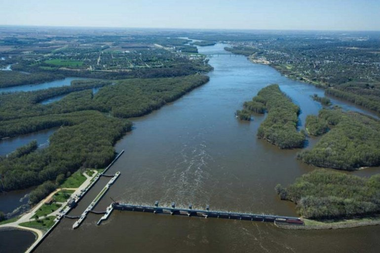
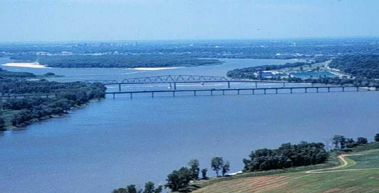
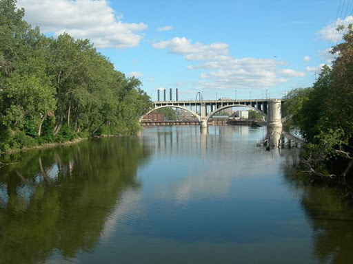
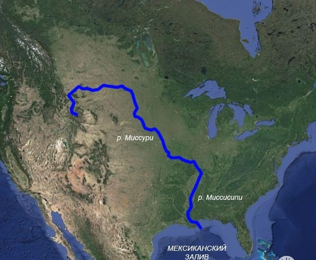

Миссисипи с Миссури
Главная страница


Миссисипи — река в США, одна из величайших рек мира. Миссисипи — главная река крупнейшей речной системы в Северной Америке. Протекает исключительно на территории Соединённых Штатов Америки, хотя её бассейн распространяется и на Канаду. Истоком Миссисипи считается либо ручей Николетт-Крик, либо озеро Айтаска, в которое он впадает. Исток расположен в штате Миннесота на высоте примерно 530 м над уровнем моря.
Река в основном течёт в южном направлении и достигает длины в 3770 километров, заканчиваясь обширной дельтой в Мексиканском заливе. Сама река протекает по территории 10 штатов, а её бассейн охватывает 31 штат от Скалистых гор до горной системы Аппалачи. Миссисипи занимает тринадцатую позицию в списке длиннейших рек мира, а речная система Миссисипи-Миссури — третью, и девятую — в списке по полноводности. Миссисипи является частью границ или же пересекает штаты Миннесота, Висконсин, Айова, Иллинойс, Миссури, Кентукки, Теннесси, Арканзас, Миссисипи и Луизиана.
Покрытая толстым слоем иловых отложений, долина реки является одним из плодороднейших регионов США, что послужило развитию легендарной эры пароходов на Миссисипи. Во время Гражданской войны захват Миссисипи силами Союза послужил поворотной точкой в противостоянии в силу важности реки как торгового и транспортного пути. По мере устойчивого роста городов и появления на реке больших кораблей и барж, которые вытеснили прежние маломерные суда, с начала XX века начинаются масштабные гидротехнические работы, в результате которых на реке появилось множество дамб, плотин, шлюзов и прочих гидротехнических сооружений.
Длинна: 3770 км
Площадь: 2 981 тыс. км²
Расход воды: 12 743 м³/сек

МИССИСИПИ НА КАРТЕ